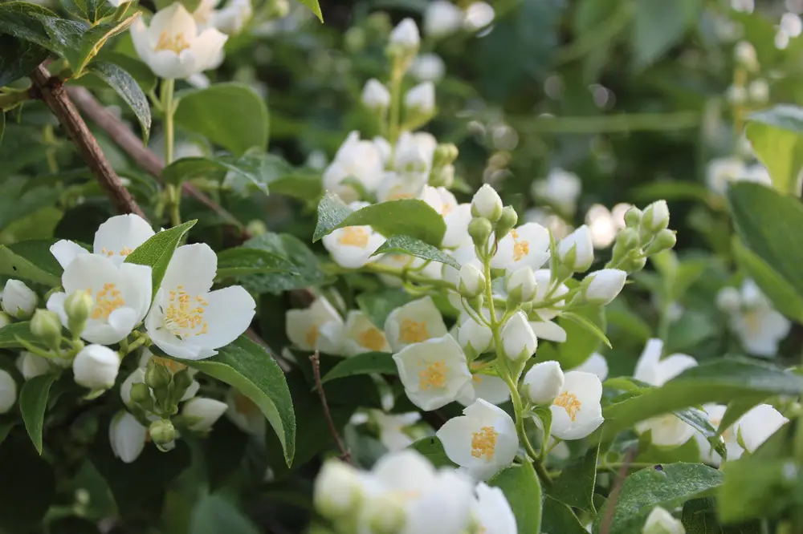
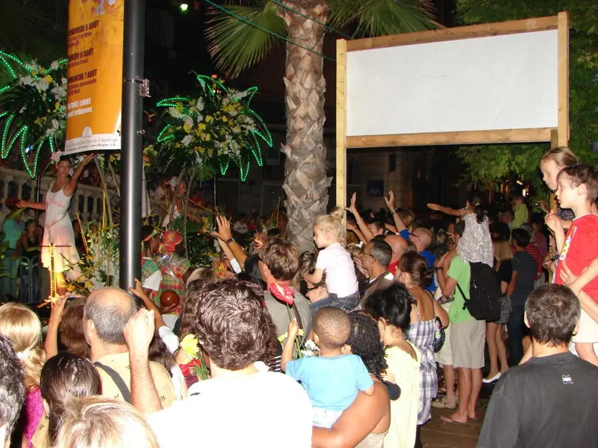

Articles / Tips & trends
Check out the Jasmine festival!
2022-08-05 · News, Tips and Trivia

Original public content from Yen Chuan. Product claims and specifications remain subject to confirmation by the company.
Have you ever heard of the Fête du Jasmin? Translating to the Jasmine Festival, this annual event celebrates this well-beloved flower. Want to learn more about this festival? Read on to find out!

What is this Festival about?
The town of Grasse on the French Riviera has celebrated the jasmine flower with Fête du Jasmin for over 60 years. This festival takes place in August, marking the beginning of the flower’s harvesting season.
Why Jasmine?
Why are jasmine flowers so important to Grasse? Grasse is also known as the “Capital of Perfume”, and the flower is an essential ingredient in high-end perfumes. Every summer, for three sweet perfumed days, Grasse celebrates the flower that has shaped the town’s destiny for centuries in lavish style.

, via Wikimedia Commons" loading="lazy" decoding="async">You can see parades, fireworks, jasmine flowers and dancing throughout the day.
All around the city, people toss flowers and confetti to the audience, and spray them with floral-scented water.
Late at night, the city is transformed into an open-air dance floor with DJ evenings all around the streets, filling the aromatic air with jazzy and tropical sounds.
The Fête du Jasmin is the perfect place for an unforgettable sweet, floral and fruity experience!
Want to recreate this aromatic scene at home? We’re here to help! Brew up a pot of jasmine green tea, or check out our floral-flavoured syrups!